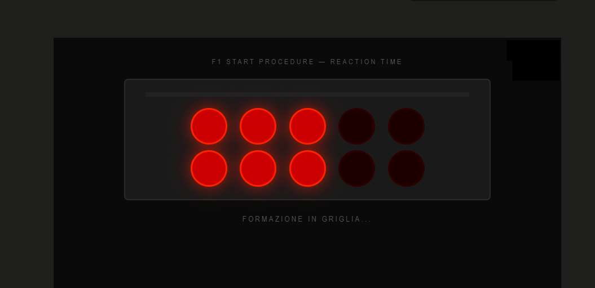
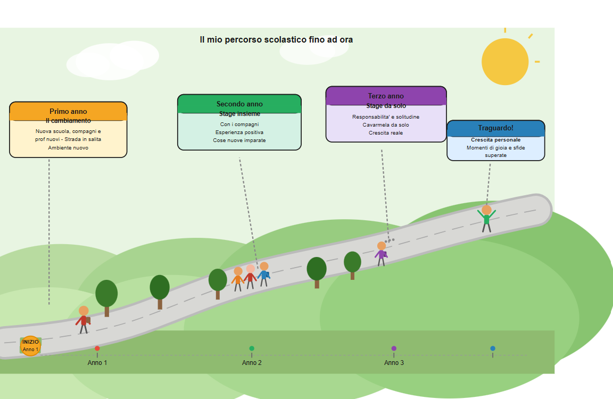

Portfolio
JAMIL HOWLADER
Studente di Informatica al terzo anno. Interessato al mondo della tecnologia e alla crescita professionale.
Chi sono
Informazioni personali
Mi chiamo Jamil Howlader, ho 17 anni e frequento il terzo anno dell'indirizzo Informatica presso la scuola Immaginazione e Lavoro. Sono curioso, mi piace risolvere problemi e imparare cose nuove. Nel tempo libero esco con i miei amici per giocare e divertirmi, oppure gioco ai videogiochi.
Competenze
Cosa so fare
Le competenze tecniche acquisite durante l'anno scolastico.
HTML / CSS
Intermedio
Python
Base / Intermedio
Arduino
Base
Reti
Base
Sistemi operativi
Base
WordPress
intermedio
Progetti
Cosa ho realizzato
I progetti sviluppati durante l'anno scolastico.

Sito auto
Questo sito vende auto, moto, barche e altri veicoli. Il sito è stato realizzato con HTML e CSS
→ Vedi il progetto
Test Reazione
Questo è un mini gioco pensato per testare la tua velocità di reazione. Il gioco è stato realizzato in Python
Percorso
Il mio percorso scolastico

Curriculum Vitae
Il mio CV
Formazione, esperienze e competenze in formato sintetico.
Formazione
Operatore Informatico
Immaginazione e Lavoro — MilanoCorso triennale ad indirizzo Informatica. Programmazione Python, web design, Arduino, reti e sistemi operativi.
Operatore Informatico
Istituto tecnico molinari — MilanoCorso tecnico ad indirizzo Informatica. Studio di programmazione, sviluppo web, reti informatiche, sistemi operativi e competenze digitali orientate al mondo del lavoro.
Licenza Media
Istituto Comprensivo Casa Del Sole — MilanoVotazione: 7/10.
Esperienze
Stage
Dahua — MilanoDurante l'esperienza in Dahua mi occupavo principalmente dell'installazione e dell'aggiornamento del firmware su telecamere e sistemi di allarme. Dopo aver verificato che i dispositivi funzionassero correttamente, aiutavo nella loro preparazione e nell'imballaggio per la spedizione. Questa esperienza mi ha permesso di sviluppare competenze tecniche, attenzione ai dettagli e capacità di problem solving. .
Competenze tecniche
Lingue
Madrelingua
Seconda lingua
Livello B1 — scolastico
Contatti
Dove trovarmi
Puoi contattarmi tramite email o trovare i miei lavori online.